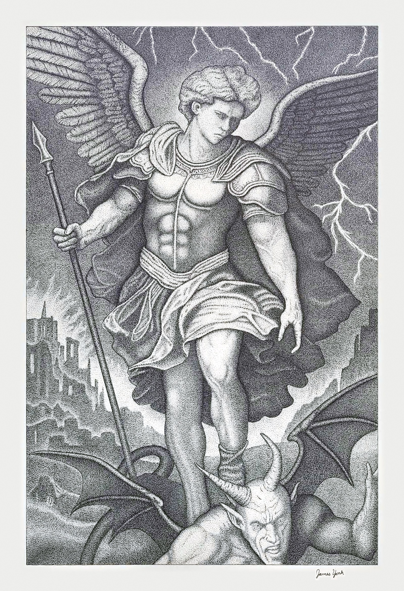
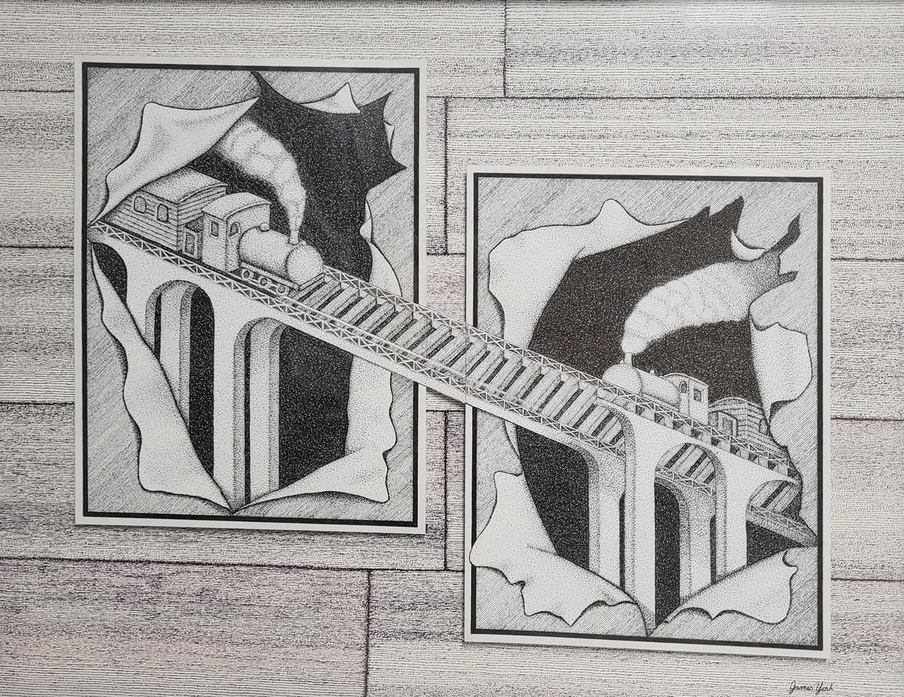

No. 01 — Archangel Michael
Every image begins with a single mark. Every detail takes patience. One dot at a time, an idea becomes something real.

No. 01 — Archangel Michael

No. 02 — Through the Frames
No. 03 — Capitol